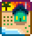

Warning: Spoilers  This page or section contains unmarked spoilers from update 1.6 of Stardew Valley. Players may want to avoid or be cautious toward reading this article/section.
|
- See also: Cabin, Cabin Locations

The selection area for maps at character creation.
There are eight different Farm Maps to choose from in Stardew Valley. Each map features a unique layout of the Farm, offering different benefits and favoring specific skills. Only one map can be chosen when starting a new game, and cannot be changed once selected.
The Standard Farm offers the most space to plant crops and raise animals. The other seven farms lack farming area, but offer special perks in comparison:
- The Riverland Farm encourages Fishing.
- The Forest Farm encourages Foraging.
- The Hill-top Farm encourages Mining.
- The Wilderness Farm encourages Combat (but only gives 1/3 Combat experience for it).
- The Four Corners Farm offers perks from other maps and encourages Multiplayer.
- The Beach Farm offers extra items and encourages Fishing and Foraging, but discourages Farming late game.
- The Meadowlands Farm encourages Farming, specifically raising animals, and comes with two chickens by default.
The interior of the farmhouse is decorated to match the theme of the chosen map. This includes furniture, wallpaper and flooring. The exterior of the house is the same regardless of map choice.
There is an abandoned building on all maps which can later be turned into the Greenhouse. Once repaired, it can be moved by visiting the Carpenter's Shop or Wizard's Tower.
Map Types
|
|
This article is marked as a stub for the following reason:
- Add the number of non-tillable but buildable tiles for Meadowlands farm
|
| Name
|
Map
|
Description
|
Associated Skill
|

Standard Farm
|

|
- The majority of this map is farming land, ideal for crops and animals.
- The number of tillable tiles on this map is 3427, with 235 non-tillable but buildable tiles.
- The biggest contiguous rectangular area is 63 x 31 (1953) tiles.
|
 Farming Farming
|

Riverland Farm
|

|
- Water significantly decreases the overall farming area.
- Players start with a Fish Smoker, which can help significantly with income made from fishing.
- Fishing is viable on this farm:[1]
- The number of tillable tiles on this map is 1578, with 516 non-tillable but buildable tiles.
|
 Fishing Fishing
|

Forest Farm
|

|
- The farm border is made of trees and foliage, just like in the Secret Woods.
- Many bushes can be found on this map, including berry bushes.
- The western clearings spawn 8 renewable Large Stumps (Hardwood), seasonal forage items, and unique Weeds that always drop Mixed Seeds. The possible forage items are:[2]
- When fishing:[1]
- 5% of the time (modified by daily Luck), players will catch Woodskip. The exact formula is 0.05 + Daily Luck. This means that if the daily luck is at or below -0.05, there is no chance of catching a Woodskip. With maximum luck (0.125, only possible with the Special Charm), each cast has a 17.5% chance to hook a Woodskip.
- 45% of the rest of the time, players will catch pond and river fish, i.e., fish that are found in Cindersap Forest.
- Otherwise, players will catch only trash.
- Additional ponds and grass areas decrease the overall farming area.
- The number of tillable tiles on this map is 1413, with 1490 non-tillable but buildable tiles.
|
 Foraging Foraging
|

Hill-top Farm
|

|
- The southwest hill-top spawns Stones, Ore nodes, and Geode nodes depending on the player's Mining level. If the farm quarry is cleared, it will usually regenerate 7-13 items every 4th day, which appears to be the optimal day to clear the farm quarry. The mining area may sometimes be blocked by a Large Stump, Large Log, or a Boulder, making it impossible to enter until the player has the correct tool.
- Additional cliffs and a stream decrease the overall farming area.
- When fishing:[1]
- 50% of the time, players will catch forest river fish, i.e., fish that are found in the Cindersap Forest river.
- 50% of the time, players will catch only trash.
- The number of tillable tiles on this map is 1648, with 930 non-tillable but buildable tiles.
|
 Mining Mining
|

Wilderness Farm
|

|
- Monsters spawn at night (scales with the player's Combat level).
- When fishing:[1]
- 35% of the time, players will catch lake fish, i.e., fish that are found in The Mountain lake.
- 65% of the time, players will catch only trash.
- Additional cliffs and ponds decrease the overall farming area.
- The number of tillable tiles on this map is 2131, with 444 non-tillable but buildable tiles.
|
 Combat Combat
|

Four Corners Farm
|

|
- The farming area is split by cliffs into four distinct areas, each reminiscent of some of the other Farm Maps.
- Top left: Forest Farm. This quadrant has a small grassy area containing a Large Stump, and weeds here can transform into the unique ones that always drop mixed seeds, the same as on the Forest Farm.
- Top right: Standard Farm. This quadrant has the most farming space.
- Bottom left: This quadrant has a pond. Players have a 50% chance of catching forest pond fish, i.e., fish that are found in the Cindersap Forest pond.[1]
- Bottom right: Hill-top Farm. This quadrant contains a small quarry that spawns Rocks and Ore and Geode nodes depending on the player's Mining level.
- Additional cliffs and ponds decrease the overall farming area.
- The number of tillable tiles on this map is 2952.
|
 Multiplayer Multiplayer
|

Beach Farm
|

|
- Sprinklers don't work in the sandy soil.
- There is a patch of 202 tiles (10x20 plus 2) where sprinklers can be placed (requires clearing from trees and large logs with steel axe or better).
- Good foraging and fishing, and a lot of open space. Sometimes, supply crates wash up on shore.
- Both forest and beach foragables may spawn.
- Intended for "seasoned players", not as a first farm. A typical strategy of increasing crop fields and crafting large quantities of quality sprinklers won't work on this farm.
- Large open areas can be used to build Barns, Coops or Sheds. Grass can grow on sandy soil.
- Fish ponds are another option although it will take quite a while to build and populate them with profitable fish like Lava Eel
- Alternatively you can opt to plant mini forests of wild trees to then place mushroom logs inside them and harvest mushrooms for income
- The number of tillable tiles on this map is 2700, with 1928 non-tillable but buildable tiles.
- When fishing:[1]
- 15% of the time, players will catch Seaweed.
- 5.1% of the time, players will catch one of Oyster, Coral, Mussel or Cockle. Chances for each item are equal.
- 52.73% of the time, players will catch ocean fish, i.e., fish that are found in The Beach.
- 27.17% of the time, players will catch trash.
|
Foraging
Fishing
|

Meadowlands Farm
|

|
- Has a chewy blue grass that animals love.
- Players start with a Coop and two chickens, randomly named.
- Instead of receiving 15 Parsnip Seeds from Mayor Lewis, the player instead receives 15 pieces of Hay from an unknown source.
- When fishing from the river, Players have a 40% chance of catching forest pond fish, i.e., fish that are found in the Cindersap Forest pond.[1]
- The number of tillable tiles on this map is 2066 with [unknown] non-tillable but buildable tiles
|
Farming
|
Map Tab
The following gallery shows how each farm type appears in-game on the player's map tab.
References
- ↑ 1.0 1.1 1.2 1.3 1.4 1.5 1.6 The fish that can be caught on each of the farm maps are determined by the data file Content\Locations.xnb.
- ↑ See Farm::DayUpdate in the game code.
History
- 1.0: Introduced Standard Farm Map.
- 1.1: Added Forest, Hill-top, Riverland, and Wilderness Farm Maps.
- 1.4: Added Four Corners Farm Map.
- 1.5: Added Beach Farm Map. Chat interface changes, which eliminated a bug preventing placement of path tiles near Cindersap Forest. Greenhouse can now be moved.
- 1.6: Added Meadowlands Farm Map. Players on the Riverland Farm Map get a Fish Smoker by default. Iridium Golems now spawn exclusively on the Wilderness Farm Map. Monsters now give 1/3 of normal Combat experience when spawned on the Farm.